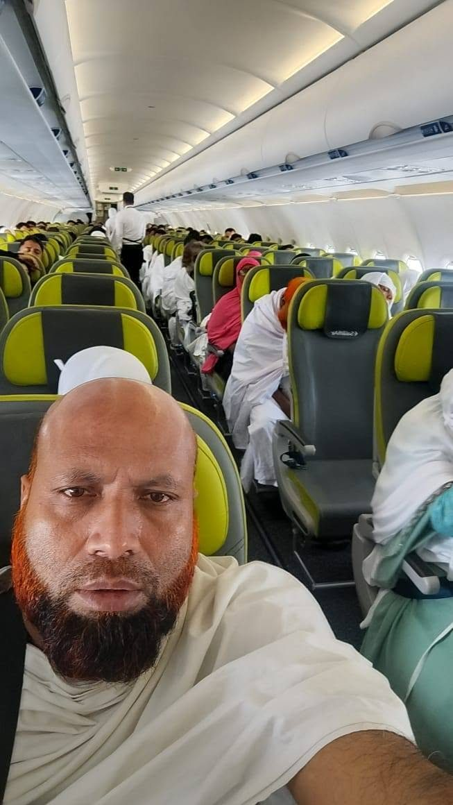

Asia · Custom itinerary
Thailand
Popular route: Bangkok · Pattaya · Phuket
Temples, markets, beaches and island excursions.
Accommodation approach: City-centre hotel options in Bangkok and Pattaya; beach-area hotel options in Phuket. Property names and star category are confirmed in the quote.
Ask for Thailand options